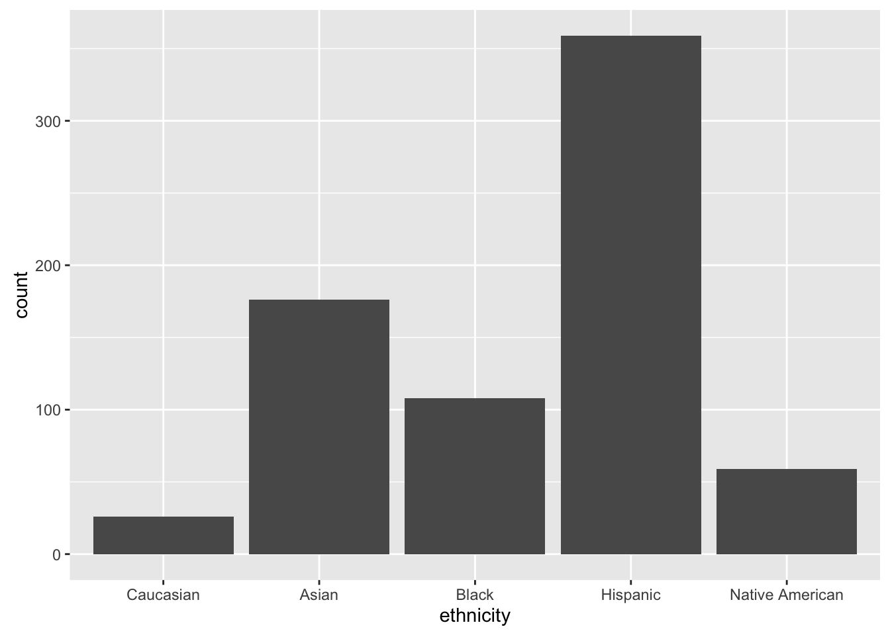

In this lesson we will use a subset of Carolyn Dapper’s dataset, with data from the United States Courts of Appeals Data Base (Dr. Donald R. Songer’s project).
library(dplyr)
library(ggplot2)
appeals_sub <- read.csv("data/appeals_sub.csv")Each row in the dataset contains information about a Court appeal and has the following variables:
| variable | description |
|---|---|
fileid |
The ID for that case |
year |
Year: {1925, 1926, …, 1995} (time variable) |
month |
Moth: {1, 2, …, 12} (time variable) |
day |
Day: {1, 2, …, 31} (time variable) |
circuit |
Circuit number: {0, 1, …, 11} (categorical) |
state |
State: {0, 1, …, 55} (categorical) |
district |
District: {0, 1, …, 8} (categorical) |
reversed_dum |
Reversed dummy: {0, 1} (categorical) |
ethnicity |
Ethnicity: {Asian, Black, Caucasian, Hispanic, Native America} (categorical) |
income |
Income: {Poor, Middle, Wealthy} (ordinal) |
counstel_type |
Counsel Type: {Public, Government, Interest Group, None, Private} (categorical) |
weight |
Weight: (weights variable) |
Sometimes we know that the data we have is not representative of the population we are trying to imply something about, but we do have information about how unrepresentative the sample on certain dimensions.
In this case, the researchers that collected the data sampled 15 random cases from each appellate court circuit and year from 1925 to 1960, and 30 random cases from 1961 to 1996. However, since the number of cases by circuit and year vary widely, this means that there is an over-representation of some circuit/years and an under-representation of others in the data. We need to calculate some weights and use them in our analysis in order to account for that miss-representation. The following figure illustrates the point.
| circuit | sample | proportion | universe | proportion | weight |
|---|---|---|---|---|---|
| 01 | 15 | .1 | 095 | .049 | 0.49 |
| 02 | 15 | .1 | 329 | .170 | 1.70 |
| 03 | 15 | .1 | 116 | .060 | 0.60 |
| 04 | 15 | .1 | 099 | .051 | 0.51 |
| 05 | 15 | .1 | 175 | .091 | 0.91 |
| 06 | 15 | .1 | 222 | .115 | 1.15 |
| 07 | 15 | .1 | 081 | .042 | 0.42 |
| 08 | 15 | .1 | 220 | .171 | 1.71 |
| 09 | 15 | .1 | 289 | .150 | 1.50 |
| DC | 15 | .1 | 196 | .101 | 1.01 |
| total | 150 | 1.0 | 1,932 | 1.0 |
Once we have a weights variable in our dataset, it’s pretty easy to estimate a model accounting for those weights. The lm() function in R has a weights parameter where we need to specify the name of the variable containing the weights.
model <- lm(reversed_dum ~ ethnicity + income + counsel_type,
data = appeals_sub)
model_weights <- lm(reversed_dum ~ ethnicity + income + counsel_type,
data = appeals_sub,
weights = appeals_sub$weight)
summary(model)##
## Call:
## lm(formula = reversed_dum ~ ethnicity + income + counsel_type,
## data = appeals_sub)
##
## Residuals:
## Min 1Q Median 3Q Max
## -0.8663 -0.3894 -0.2393 0.5891 0.8466
##
## Coefficients:
## Estimate Std. Error t value Pr(>|t|)
## (Intercept) 0.04780 0.09582 0.499 0.61806
## ethnicityBlack 0.16941 0.06107 2.774 0.00568 **
## ethnicityCaucasian 0.19366 0.10305 1.879 0.06061 .
## ethnicityHispanic 0.02146 0.04511 0.476 0.63439
## ethnicityNative American 0.06430 0.07295 0.881 0.37836
## incomePoor -0.06428 0.07692 -0.836 0.40365
## incomeWealthy 0.10565 0.06985 1.512 0.13086
## counsel_typeGovernment 0.56975 0.24376 2.337 0.01969 *
## counsel_typeInterest Group 0.54348 0.24331 2.234 0.02581 *
## counsel_typeNone 0.06438 0.09724 0.662 0.50817
## counsel_typePrivate 0.23597 0.05893 4.004 6.88e-05 ***
## ---
## Signif. codes: 0 '***' 0.001 '**' 0.01 '*' 0.05 '.' 0.1 ' ' 1
##
## Residual standard error: 0.4744 on 717 degrees of freedom
## Multiple R-squared: 0.04581, Adjusted R-squared: 0.0325
## F-statistic: 3.442 on 10 and 717 DF, p-value: 0.0001993summary(model_weights)##
## Call:
## lm(formula = reversed_dum ~ ethnicity + income + counsel_type,
## data = appeals_sub, weights = appeals_sub$weight)
##
## Residuals:
## Min 1Q Median 3Q Max
## -0.8663 -0.3894 -0.2393 0.5891 0.8466
##
## Coefficients:
## Estimate Std. Error t value Pr(>|t|)
## (Intercept) 0.04780 0.09582 0.499 0.61806
## ethnicityBlack 0.16941 0.06107 2.774 0.00568 **
## ethnicityCaucasian 0.19366 0.10305 1.879 0.06061 .
## ethnicityHispanic 0.02146 0.04511 0.476 0.63439
## ethnicityNative American 0.06430 0.07295 0.881 0.37836
## incomePoor -0.06428 0.07692 -0.836 0.40365
## incomeWealthy 0.10565 0.06985 1.512 0.13086
## counsel_typeGovernment 0.56975 0.24376 2.337 0.01969 *
## counsel_typeInterest Group 0.54348 0.24331 2.234 0.02581 *
## counsel_typeNone 0.06438 0.09724 0.662 0.50817
## counsel_typePrivate 0.23597 0.05893 4.004 6.88e-05 ***
## ---
## Signif. codes: 0 '***' 0.001 '**' 0.01 '*' 0.05 '.' 0.1 ' ' 1
##
## Residual standard error: 0.4744 on 717 degrees of freedom
## Multiple R-squared: 0.04581, Adjusted R-squared: 0.0325
## F-statistic: 3.442 on 10 and 717 DF, p-value: 0.0001993By the way, when using categorical covariates, in the regression output you will get a coefficient for each of the categories but one, which is the base category. The coefficients represent the average difference between being in the base category and being that other cateogry. The intercept represents the mean outcome value for the base category. If you are interested in changing the base category of your categorical covariate, you can use the relevel() function. For example, right now the base category for the ethnicity variable is Asian.
levels(appeals_sub$ethnicity)## [1] "Asian" "Black" "Caucasian" "Hispanic"
## [5] "Native American"If we wanted to change it to Caucasian, we would do the following:
appeals_sub$ethnicity <- relevel(appeals_sub$ethnicity, "Caucasian")
levels(appeals_sub$ethnicity)## [1] "Caucasian" "Asian" "Black" "Hispanic"
## [5] "Native American"Plots representing absoulte data (e.g. histograms, barplots) should also take the calculated weights into consideration. There is a weight parameter that most ggplot2 geoms have that makes this very eashy.
A barplot of the variable ethnicity without weights.
ggplot(appeals_sub, aes(x = ethnicity)) +
geom_bar(stat = "count", position = "dodge")
A barplot of the variable ethnicity with weights. The difference is small but it’s there!
ggplot(appeals_sub, aes(x = ethnicity)) +
geom_bar(appeals_sub$weight, stat = "count",
position = "dodge")